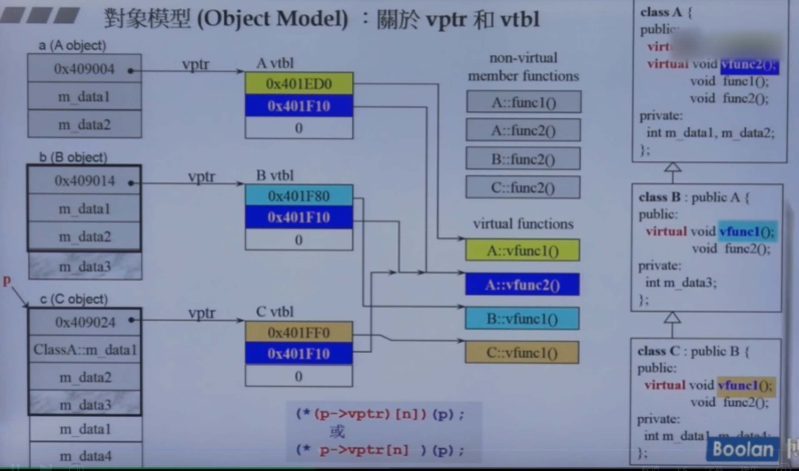

1导读
- c++11 2.0
- 泛型编程 面向对象
- 虚函数底层的设计
2 conversion function 转换函数
转出去
class Fraction//分数可以转换为小数
{
public:
Fraction(int num,int den=1)
：m_numerator(nums),m_denominatorm_numerator(den){}
operator double() const{
//没有返回类型 不改变 数据 为cosnt
return(double)(m_numerator/m_denominator);
}
private:
int m_numerator;
int m_denominator;
};
Fraction f(3,5);
double d=4+f;//调用operator double()讲f转为0.6
编译器的动作，看有没有写+的动作/函数。能否捕获，只要认为合理就可以写转换函数
3 non-explicit-one-argument ctor
class Fraction//分数可以转换为小数
{
public:
Fraction(int num,int den=1)
：m_numerator(nums),m_denominatorm_numerator(den){}//数学上认为3就是3/1，two parameter one arguement一个实参
Fraction operator+ (const Fraction& f) {
return Fraction();
}
private:
int m_numerator;
int m_denominator;
};
Fraction f(3,5);
Fraction d2=f+4;
编译器看到一个语句，去找，能不能让这个语句通过，看到加去找有没有设计加这个动作；调用 non-explicit ctor 将4转换为分数 把别的东西转换为自己
若加上explicit
有多于两条路 编译器就不知道调用谁
- explicit-one-arguement
而不是编译器自动变 暗度陈仓
4 pointer-like classes
智能指针
里面一定带着一个一般的指针 *和->,->使用后还有，即 如下所示
template <class T>
class shared_ptr
{
public:
T& operator*() const
{return *ps;}
T& opetator->()const
{return ps;}
//代表一般的指针。
shared_ptr(T* p):px(p){}
//构造函数p复制导px
private:
T* px;//指针允许的动作它也可以
long* pn;
};
struct Foo
{
……
void method(void)
};
shared_ptr<Foo> sp();
Foo f(*sp);
sp->method();
//转换为
px->method();
迭代器
代表容器里面的元素 除了处理*和-> == != ++ --(指针移动)
有一个指针
typedef __list_node
处理*和->方法与上不同
5 function-like classes 所谓伪函数
函数所长的样子
（）操作符，function call operator任何一个东西如果可以接受（）操作符
template
template
template
}
继承unary function binary function 仿函数都会继承奇特的函数 标准库里有很多的仿函数，都是一些小小的class,有重载小括号，父类大小为0；
6 namespace 经验谈
namespace把一些东西区别开来 把名字包起来 很多个测试程序 放在同一个程序里 每个函数在一个命名空间里 把所有的测试，变量 函数 类
7class template 类模板
把哪些类型抽出来 使用者可以任意指定
complex
8函数模板
比大小函数 在使用时不必指明类型 因为是调用放参数 实参推导
9 成员模板
模板里的一个member
10 specialization 模板特化
泛化 反面 ；作为一个设计者面对特殊的类型特殊的设计
template <class Key>
struct hash {};
//一般的泛化
//特化可以有任意版本
template<>//被绑定 不再是一个可变的东西
struct hash<char>{
size_t operator()(char x)const {return x;}
}//重载（）
template<>//被绑定 不再是一个可变的东西
struct hash<int>{
size_t operator()(int x)const {return x;}
}
11partial specialization
个数的偏
template<typename T,typename Alloc=……>
class vector{};//两个模板参数，绑定其中一个
template<typename Alloc=……>
class vector<bool,Alloc>//最小单元char 1byte,浪费内存，单独设计
//绑定bool
{}
范围的偏
任意类型缩小为指针
template <typename T>
class C{
……
};
template <typename T>
class C<T*>//指针，指向t，与上面的t不同
{
……
};
C<string> obj1;
C<string*> obj2;
12 template template parameter
模板参数套模板参数
template<typename T,
template<typename T>
class Container
>//只有在模板中才可以共通class &typename
class XCLs
{
private:
Container<T> c;//T当成元素类型
public:
……
};
template<typename T>
using lst=list<T,allocator<T>>;
XCLs<string,list> mylist1;//不可，容器有第二第三参数，语法上过不了，解决问题，另一个语法using
XCLs<string,lst> mylist1;
//传容器与容器的类型/指定
template<typename T,
template<typename T>
class SmartPtr
>
class XCLs
{
private:
SmartPtr<T> sp;
public:
XCLs():sp(new T)()
};
XCLs<string,shared_ptr> p1;
XCLs<long,auto_ptr> p2;
13 关于c++标准库
- 迭代器 iterators
- 容器 containers datastructure
- 算法 algorithms sort search copy
- 仿函数 functors
__cpluscplus
14 三个主题
variadic templates
数量不定的模板参数
void print(){
}//最后变成0个时变成这一个版本
template<typename T,typename...Types>//一个和一包
void print(const T&firstArg,const Types&...args)
{
cout<<firstArg<<endl;
print(args...);
}
如果想知道一包里有多少个 sizeof...(args)
auto
编译器帮忙推 赋值 语法糖
ranged-base for
同 语法糖
for(decl:coll){
statement
}//容器,遍历
for(int i:{1,2,3,5,7}){
cout<<i<<endl;
}
vector<double> vec;
for(auto elem:vec){
cout<<elem<<endl;
}//复制动作passbyvalue,
for(auto& elem:vec){
//传引用改变的是本身的值，
elem*=3;
cout<<elem<<endl;
}
15 reference
- 声名时一定要有初值，编译器实现指针
- 设完之后不可以再改变
- 烈女不侍二夫……
- 指针的大小在不同位系统不一样
常见用途
一种漂亮的pointer 很少声名变量对象时使用说类型为引用
参数传递类型和返回类型 返回也是一种传递
void func1(cls* pobj)（
pobj->xxx();
）
void func2(cls obj)(obj.xxx();)
void func3(cls& obj)
(obj.xxx();)
//这两种写法相同，好
//调用端
cls obj;
func1(&obj);
//写法相同，但是一个传值，另一个传的是引用,更快。地底部是传指针
func2(obj);
func3(obj);
double imag(const double& im){}
double imag(const double im){}
//签名相同不可并存signature
//讨论同名函数能否同时存在，编译器无法知道调用谁
//const 是否为函数签名的一部分？是故两个有无c可并存
object model
16复合继承关系下的构造和析构
继承
构造 由内而外 先调用内部的构造函数，编译器自动加执行之前调用父类的构造函数 析构 由外而内
组合
同上构造和析构
继承组合复合
 构造：先调用父类再调用组合类
构造：先调用父类再调用组合类
析构：首先执行自己然后调用 component的析构函数，然后调用nase 的析构函数
17对象模型 关于vptr和vtbl
一个对象占用的内存看的是存的数据，若有虚函数则还存了虚指针 函数的继承继承的是调用权，不知道函数占用内存大小

vptr vtbl 指针 表
（*p->vptr[n]）(p);
声明一个容器，指针 而且指的是父类（每只猴子都是动物），指针类型一致4个字节，而如果放各类形状，类型不一致 类似于上图的func1,ppt画形状 每个类都有一个draw,为虚函数
- c++编译器看到函数调用 两个考量 静态绑定 call xxx 地址 动态绑定 符合条件：1.指针调用 2.uocast 向上转型？new的是一只猪，但指的是动物3.调用的是虚函数 要看p指向谁 虚机制 多态指针指向不同的东西，同样是a
18关于this pointer
对象的地址通过对象调用函数时
template method 动态绑定
20const
常量成员函数 不改数据的意图
const string str("hello world"); str.print(); //错误，常量对象不可以调用非常量函数 名称代表动作，修改数据 要不要加const
copy on write 考虑共享，修改的是复制的那一份 规则： 当成员函数const 与非const 同时存在时 constobjext 只能用cons non const 用 non-const
21 重载 ::operator new/delete; new[]/delete[]
全局或成员
new分解为三个动作 delete分解为两个动作
字符串string 指针4个字节